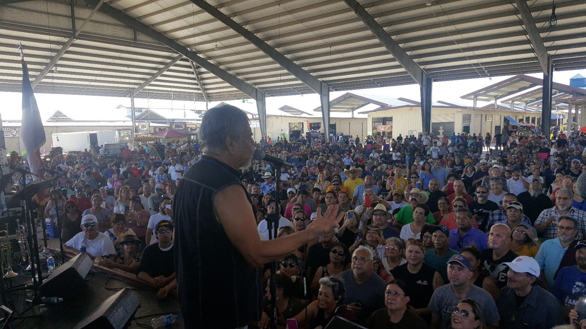
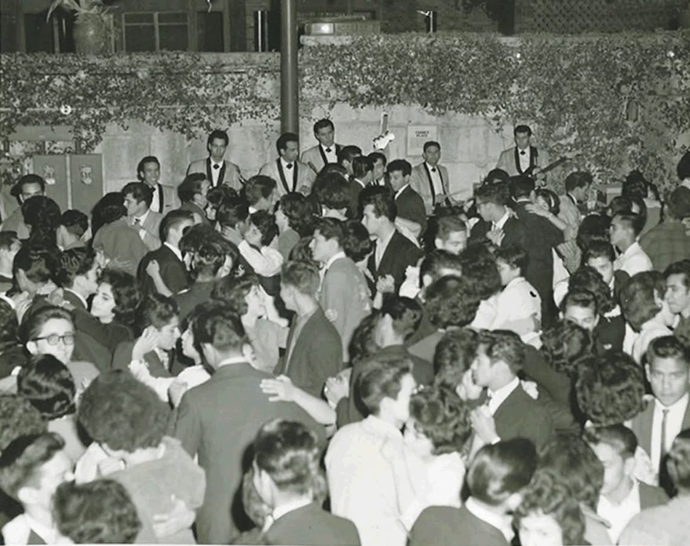
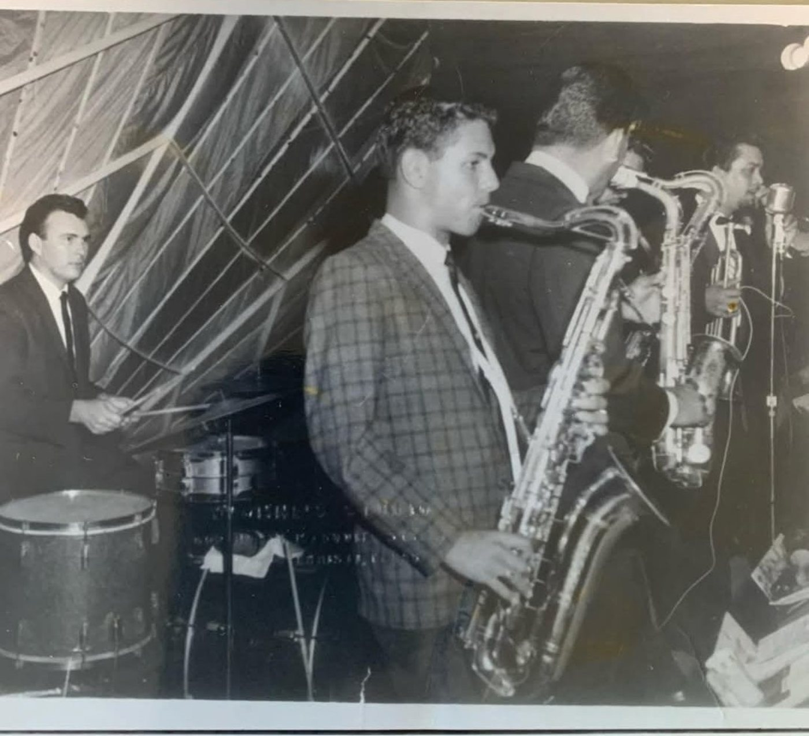
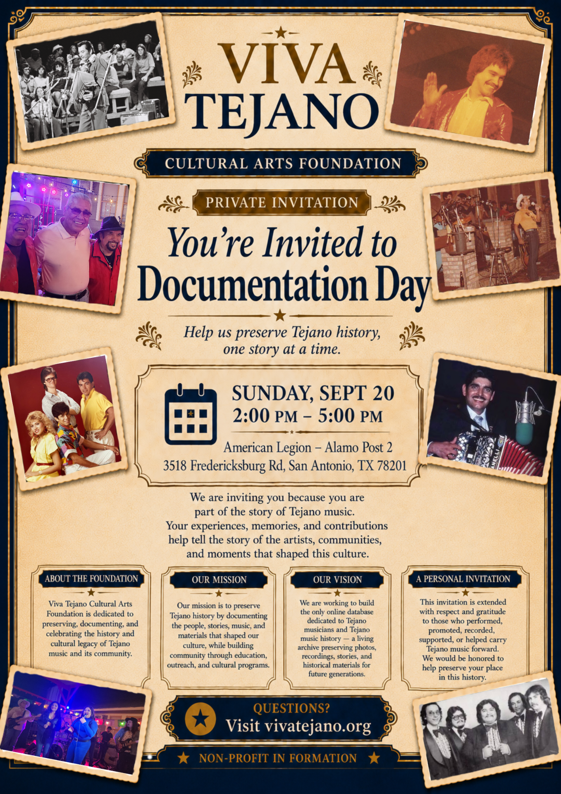
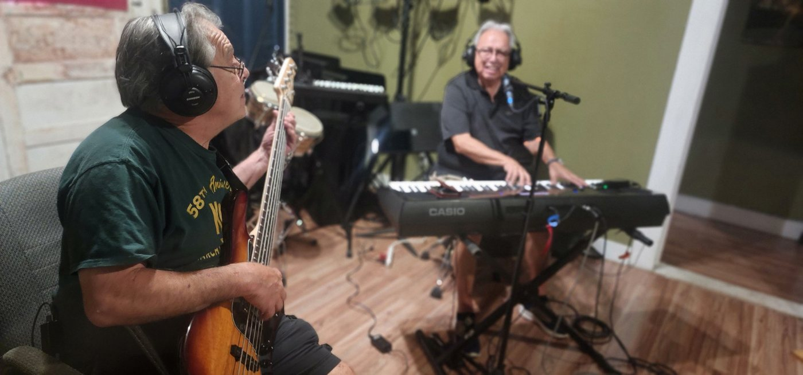
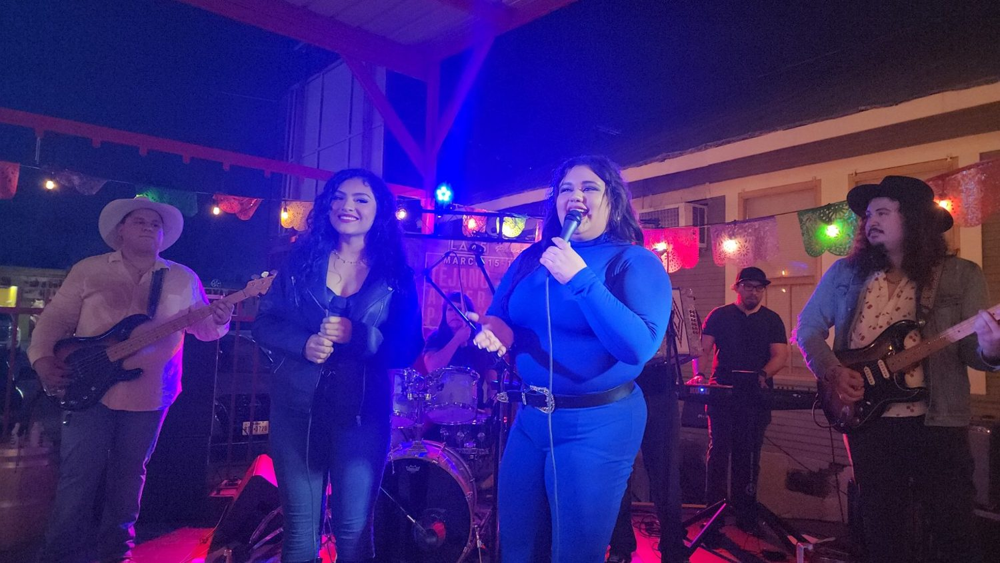
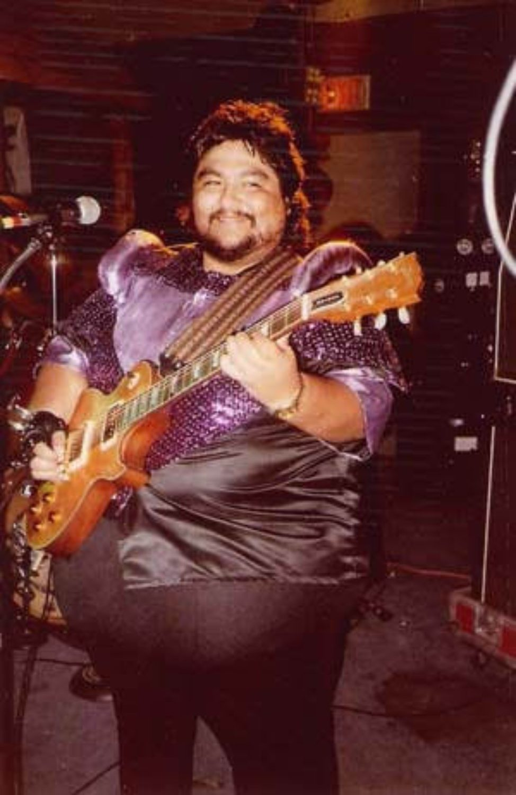
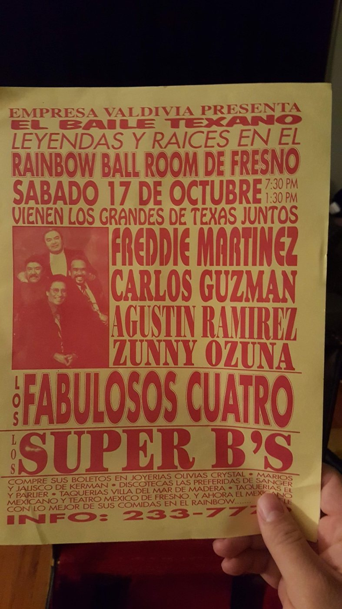
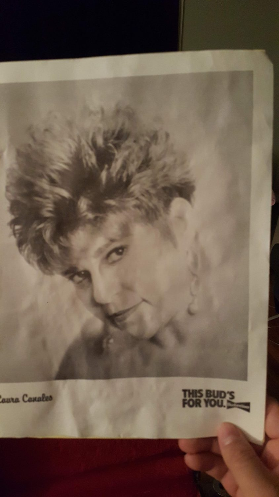

Preserve
Protect photographs, recordings, posters, programs, and other cultural materials.

San Antonio, Texas
Documenting the music, stories, photographs, recordings, and people who shaped Tejano history for future generations.
Why We Exist
Somewhere in a closet, attic, garage, or photo album is a photograph, concert poster, recording, or story that deserves to be preserved.
Viva Tejano Cultural Arts Foundation exists to make sure those memories are not lost to time. Our work begins with documentation: identifying people, preserving images, recording stories, and building the foundation for a future digital archive.


Why Now?
Every year, irreplaceable photographs, recordings, posters, and memories disappear. Many of the musicians and pioneers who shaped Tejano music are still with us today.
By documenting their stories now, we preserve them for future generations.

Registration Now Open
We are inviting musicians, families, and members of the Tejano music community to help us document the people, stories, photographs, recordings, and materials that shaped this culture.
3518 Fredericksburg Rd, San Antonio, TX 78201
Mission
Protect photographs, recordings, posters, programs, and other cultural materials.

Capture names, places, dates, memories, and oral histories while they can still be told.

Create resources that help students and communities understand Tejano cultural history.
Connect today’s artists and audiences to the legacy they carry forward.
History Lives Here



Our Vision
Documentation Day is the first step toward a larger vision: a digital archive, oral history collection, educational programs, community events, and a permanent cultural home for Tejano music.
Read the VisionWe believe every photograph deserves a name, every musician deserves a story, every family deserves to know its history, and every generation deserves access to its cultural heritage.